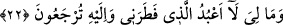
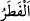
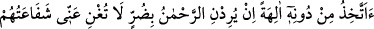
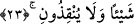

22. “Bana ne olmuş ki, beni yaratana ibâdet etmeyecekmişim! Halbuki, hepiniz
O’na döndürüleceksiniz.”
“Bana ne olmuş ki,” benim ileri sürecek ne mazeretim var ki “beni yaratana” yok
iken var edip ortaya çıkarana, türlü lütuf ve keremiyle beni terbiye edene “ibâdet
etmeyecekmişim!”
“
” kelimesinin îzahı Fâtır sûresinin başında geçmişti. Kendisine nasîhatte bulunma
ve kendisi için istediğini onlar için de istediğini göstermek sûretiyle nasihatte samimi
olduğunu ortaya koymak irşâdda inceliktir. Maksad kendilerini yaratan Allah’a ibâdeti
bırakıp başka ilâhlara ibâdet ettikleri için onları kınamaktır. Nitekim âyetin devamı
bunu haber vermektedir:
“Halbuki, hepiniz O’na döndürüleceksiniz.” Bu ifâde tehdidde mübâlağadır. Yâni ey
kavmim yeniden diriltildikten sonra yaptıklarınızın karşılığını görmek ve hesaba
çekilmek için başkasına değil, sadece Allah Teâlâ’ya döndürüleceksiniz.
Fethu’r-Rahmân’da der ki: “Habîbü’n-neccâr yaratılmayı kendine, döndürülmeyi
onlara nisbet etti. Çünkü fıtrat nimetin eseri olup bu nimet Habîb’in üzerinde daha
belirgindir. Döndürülmekte ise bir zorla yaptırma mânâsı vardır ki bu da onlara daha
lâyıktır.
Âriflerden birisi der ki: “Ubûdiyet/kulluk fıtrat/yaratılış ile karılmıştır. Ma’rifet hilkat
ve fıtratın üzerindedir. Bu mânâ Peygamberimiz (s.a.)’in “Her doğan fıtrat üzere
doğar.” sözünden alınmıştır. Şayet mârifet fıtrat ile karılmış olsaydı Peygamberimiz
(s.a.) “Ancak onun ana babası onu yahûdî, mecûsî veya hıristiyan yaparlar.”[125]
buyurmazdı. Bilakis mârifet hiçbir illet ve kesb olmaksızın bedîhi olarak Allah
Teâlâ’nın cemal ve celâlini keşfetmekle ilgilidir. Çünkü Allah Teâlâ şöyle buyurur:
“Andolsun biz İbrahim’e daha önce rüşdünü vermiştik.” (el-Enbiya, 21/51)
Bâzıları der ki: Hâlis kul başka değil, fıtratı görerek amel edendir. Ondan daha yüce
olan ise Fâtırı/yaratanı görerek amel edendir.
Habîbü’n-neccâr yine önceki hitap şekline dönerek sözü kendine nasihat sûretinde
ibraz ederek şöyle dedi:
23. “O’ndan başka ilahlar mı edineyim? O çok esirgeyici Allah, eğer bana bir
zarar dilerse onların (putların) şefâati bana hiçbir fayda vermez, beni
kurtaramazlar.”